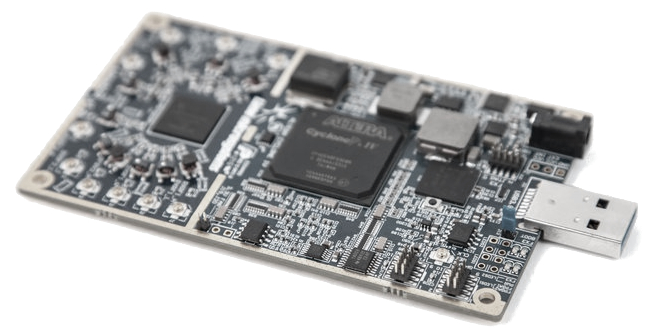

SDR setup

Introduction
A far more convenient way is to use an SDR.
Why would you (not) want to do that?
- Not a bunch of cables and radios, just one device.
- Simulate multiple channels with a single SDR channel.
Keep control channel while using voice channel(s).
- No audio level (deviation) calibration is required.
- The polarity of the frequency deviation (FFSK) is always correct.
- No radio mod for discriminator output required.
- No radio mod for modulator input required.
- Don't care about correct emphasis.
- Carrier FSK never returns to zero, no AC coupling.
- Switching to channel 19 (B-Netz) works without transmitter hack.
- More experience is required to run an SDR.
- The device must be full-duplex.
- In 2017, they are still more expensive than analog radios.
It may sound weird, but you are able to simulate multiple channels with only one SDR.
The I/Q data of an SDR allows to shift the frequency.
By adding multiple frequencies, shifted by different offset, allows to transmit multiple down-link channels at a time.
By using a filter, the mix of received up-link channels can be separated.
Multiple channels require multiple CPU usage or even more.
How to use an SDR and install the driver software and drivers is beyond the scope of this document.
I assume that you successfully used your SDR with Gnu Radio,
know how to select antenna connectors,
know about DC calibration,
know about clock settings,
know about transmit and receive gains,
and so on...
LimeSDR
If you have this device, you need to install the SoapySDR, then the LimeSuite and finally run configure with Osmocom Analog, compile and install.
Run Osmocom Analog with --help again, and you should see a bunch of option for SDR.
In case of B-Netz, I use the following parameters:
# bnetz --sdr-soapy \
--sdr-rx-antenna LNAL \
--sdr-rx-gain 30 \
--sdr-tx-gain 30 \
--sdr-samplerate 5000000 \
-s 100000 \
-k 17
Be sure to select the right RX antenna input.
The frequencies we use require the low frequency filter network, so I suggest to connect your antenna to RX_1_L and select "--sdr-rx-antenna LNAL".
Different versions of LimeSuite have different default antenna inputs, so be sure to set your RX antenna.
In order to change from analog sound card to SDR, you need --sdr-soapy option.
In my setup I use antennas directly connected to the SDR.
Being about 1-10 meters away, I use the gain as defined above.
The sample rate must be 5 MHz minimum.
The default bandwidth follows the sample rate, if not specified using --sdr-bandwidth.
Higher sample rate causes more CPU, RAM and USB load.
The local oscillator frequency causes the transmitted signal to be noisy, so I shift it 1 MHz away, using the default --sdr-lo-offset.
The audio processing rate of 100 KHz (-s 100000) is used to generate two channels: 17 and 19.
Note that channel 19 is not given here, but will be used automatically.
With B-Netz, the transmitter switches from any voice channel to the paging channel (19) whenever the phone gets paged.

The RX gain is quite important.
You can monitor it by pressing 'q' key.
You will get an ASCII art plot of received IQ data.
Press 'q' again and you will get a logarithmic view of IQ vectors.
Press 'q' again to turn off this view.
Please monitor this view when the phone tries to call or register.
If the dots are yellow, or red, the received signal may overdrive the ADC.
Especially when the linear view shows a deformed circle (or even rectangle), reduce RX level.

Press 's' to get an ASCII art graph of received frequency spectrum.
The spectrum's bandwidth is defined by the sample rate (-s) and not by the SDR sample rate!
If you don't get nice peaks, but maybe several peaks, you might over-driven the input.
Note that the peak will spread by the frequency deviation, so the peak might look noisy on the top.
If the peak is quite low, check the input gain.
UHD
Most things apply to the things stated at the LimeSDR section.
I have good experience, even without using IF offset or special resampling (--sdr-samplerate) or special bandwidth settings.
You can run any UHD device using SoapySDR or UHD API.
Use "--sdr-uhd" to use the UHD API.
Multiple Channels
Multiple channels can be useful, to keep the control channel, while establishing one or even multiple voice channels.
One nice feature of SDR is that a spectrum is transmitted and not just one modulated carrier.
Because the carrier is actually generated in software, we can generate multiple carriers that fit in our spectrum.
I suggest to have at least one channel space between channels you want to generate.
I suggest to use channel 1 and 3 or even channel 1 and 4 for NMT system.
The software will notice you, if the channels wont fit into the spectrum.
In this case increase the sample rate (-s) to generate a wider spectrum. (--sdr-samplerate must not need to be changed)
Note that the CPU usage increases for the main thread.
I suggest to monitor the usage using "top -H".
You will see each thread. Be sure not to get too close to 100 percent.
I suggest to stay below 60% for each threads.
Example: C-Netz
Two channes are created, one the OgK (control channel) and one SpK (speech channel).
The distance between channels is 20 KHz (two channels).
Because C-Netz uses only odd channel numbers for 10 KHz spacing, we use channel 131 (OgK) and 135 (SpK).
# cnetz --sdr-soapy \
--sdr-rx-antenna LNAL \
--sdr-rx-gain 30 \
--sdr-tx-gain 30 \
--sdr-samplerate 5000000 \
-s 100000 \
-k 131 -k 135 \
-C 0,0
Example: Test TV signal
Transmit PAL 'FUBK' test image on TV channel 21.
# osmotv --sdr-soapy \
--sdr-tx-gain 60 \
--sdr-bandwidth 60000000 \
-s 13750000 \
-c 21 \
tx-fubk
[Back to main page]
|